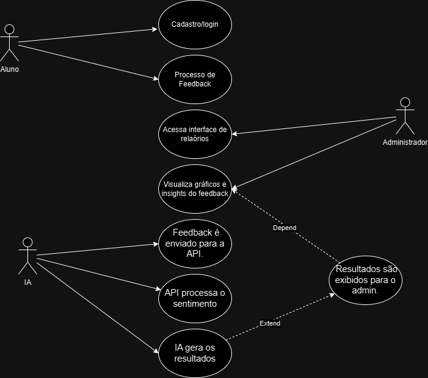

Diagrama de Caso de Uso - Feedback de Curso
Casos de Uso (Detalhamento)
1.Cadastro/Login (Aluno)
Descrição: Permitir que alunos se cadastrem e façam login para acessar a plataforma.
Atores Envolvidos:Aluno.
Fluxo Principal:
O aluno acessa a página de login/cadastro.
Insere suas credenciais (e-mail, senha).
O sistema verifica a autenticidade das informações.
Acesso autorizado.
Fluxo Alternativo: Em caso de erro, o sistema retorna mensagens específicas (e.g., "Senha incorreta").
2.Enviar Feedback (Aluno) Descrição: Registrar a opinião sobre um curso.
Atores Envolvidos: Aluno, API de IA.
Fluxo Principal: O aluno acessa a página do curso. Preenche o formulário de feedback. O feedback é enviado para o backend, armazenado no banco de dados e enviado à API de análise de sentimentos.
Fluxo Alternativo: Caso a conexão com a API falhe, o sistema armazena o feedback para envio posterior.
3.Visualizar Relatório de Sentimentos (Administrador) Descrição: Permitir que administradores acessem relatórios de feedback com análise de sentimentos.
Atores Envolvidos: Administrador.
Fluxo Principal: O administrador faz login no sistema. Acessa o painel de relatórios. Visualiza gráficos e análises geradas pela API de sentimentos.
4.Análise de Sentimentos (API de IA) Descrição: Realizar análise automática dos textos de feedback para gerar insights.
Atores Envolvidos: API de IA, Feedbacks (dados).
Fluxo Principal: O feedback enviado pelo aluno é processado pela API. A API retorna informações de polaridade (positivo, negativo, neutro) e palavras-chave associadas.
| Etapa | Ator | Descrição | Fluxo Principal |
|---|---|---|---|
| Cadastro | Aluno | Permite que o aluno crie uma conta e faça login na plataforma | 1.Aluno acessa a tela de login 2.Insere dados de acesso. 3.Validação e login são confirmados. |
| Enviar Feedback | Aluno | O aluno envia uma avaliação para o curso específico | 1.Aluno seleciona o curso. 2.Insere feedback. 3.Envia o feedback que é registrado no sistema. |
| Visualizar Relatório de Sentimentos | Administrador | O administrador acessa o relatório de feedbacks com análise de sentimentos. | 1.Administrador acessa a interface de relatórios. 2.Visualiza gráficos e insights dos feedbacks. |
| Análise de Sentimento | API de IA | Realiza a análise de sentimento do feedback recebido. | 1.Feedback é enviado para a API. 2.API processa o sentimento. 3.Resultados são exibidos para o admin. |
Imagem Do Diagrama de Caso de Uso: 
Exemplo de Cenários de Casos de Uso
1.Enviar Feedback (Aluno)
Cenário:
Aluno enviando feedback após concluir um curso
Contexto: Ana finalizou um curso de "Introdução à Ciência de Dados" e deseja avaliar sua experiência.
Ação: Ana faz login no sistema e acessa a página do curso finalizado. Ela clica no botão "Enviar Feedback". Preenche o formulário com comentários positivos sobre a didática do curso e sugestões de melhorias. O sistema armazena o feedback no banco de dados e envia automaticamente o conteúdo para a API de análise de sentimentos.
Exceção: Caso a conexão com a API falhe, o sistema exibe a mensagem: "Estamos enfrentando problemas técnicos. Seu feedback foi armazenado e será enviado posteriormente."
2.Visualizar Relatório de Sentimentos (Administrador)
Cenário: Administrador monitorando feedbacks para avaliar a qualidade dos cursos.
Contexto: Carlos, administrador da plataforma, quer avaliar a satisfação dos alunos com o curso "Python para Iniciantes".
Ação: Carlos faz login com suas credenciais de administrador. Ele acessa o painel de relatórios da plataforma. Seleciona o relatório de "Python para Iniciantes". Visualiza gráficos interativos que mostram a polaridade dos feedbacks (75% positivos, 25% negativos) e as principais palavras-chave mencionadas. Com base nos insights, ele identifica que os alunos destacam a clareza das aulas, mas mencionam dificuldades com exercícios práticos.
3.Análise de Sentimentos (API de IA)
Cenário: API processando feedback e retornando resultados
Contexto: O sistema recebeu o feedback de Ana, com o seguinte comentário: "O curso foi ótimo! A didática do professor é excelente, os exercícios são desafiadores."
Ação: O sistema envia o texto para a API de análise de sentimentos. A API processa o texto e identifica uma polaridade positiva. Também extrai as seguintes palavras-chave: "didática excelente", "exercícios desafiadores". O sistema armazena os resultados e os disponibiliza no painel de relatórios para o administrador.
Exceção: Se a API não conseguir processar o texto devido a problemas de formatação, o sistema registra o erro e exibe a mensagem: "Falha na análise de sentimentos. Tente novamente mais tarde."